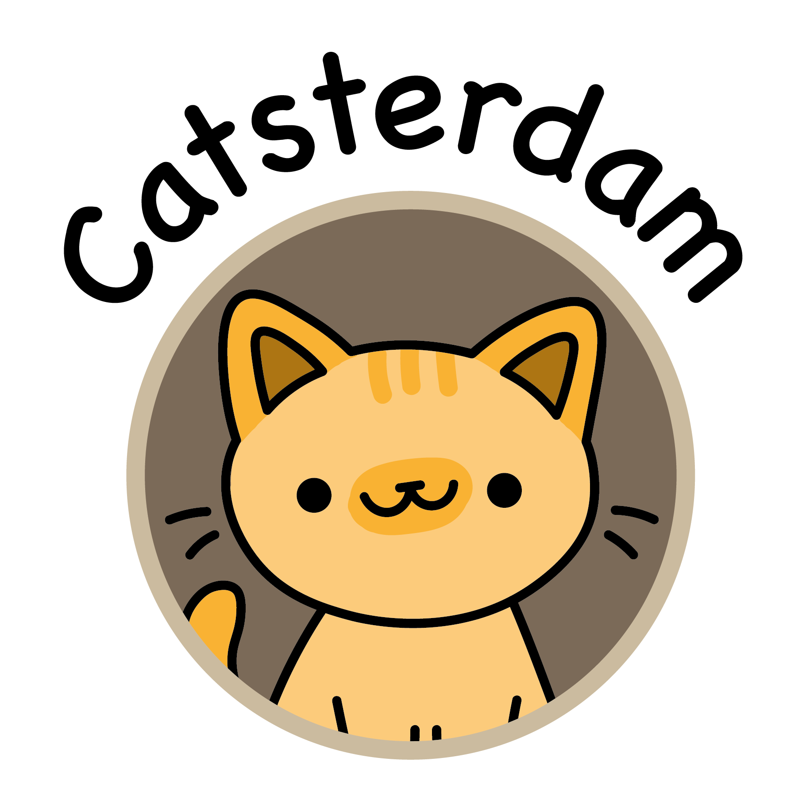

Welcome to Catsterdam, the ultimate website designed exclusively for cat enthusiasts in the charming city of Amsterdam! Nestled within the picturesque canals and historic streets, this is your go-to guide for all things feline in the heart of the Netherlands. Whether you're a local Amsterdammer or a curious traveller, Catsterdam is your passport to the city's vibrant cat culture. From quirky cat cafes and adoption centres to hidden spots where Amsterdam's resident felines like to roam, our website is your insider's map to the purr-fect cat-friendly experiences. Discover the best places to grab a cup of coffee while cuddling with adorable kitties and connect with fellow cat lovers in your neighbourhood. Join us as we explore the enchanting world of cats in Amsterdam, one paw at a time. Whether you're seeking a new furry friend, want to share your love for cats, or simply crave a dose of feline charm in your day, Catsterdam is here to make your cat-centric dreams come true!